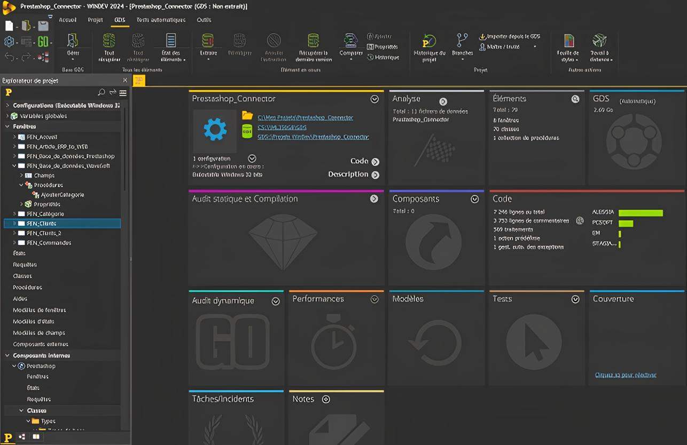
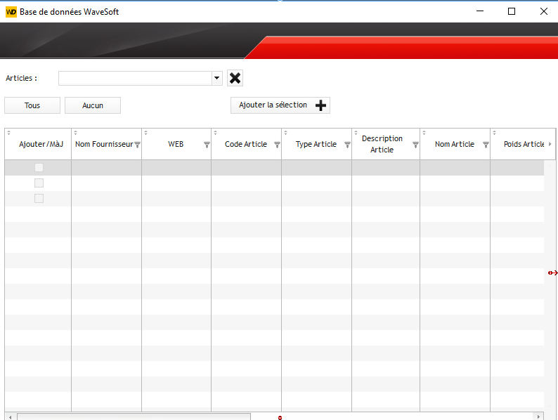
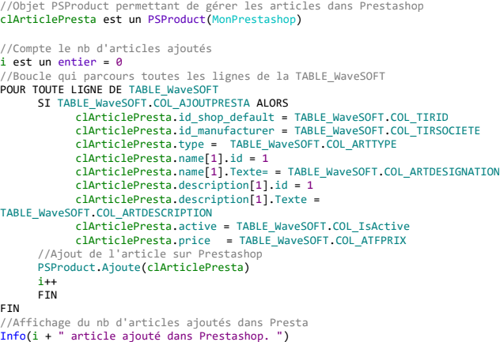
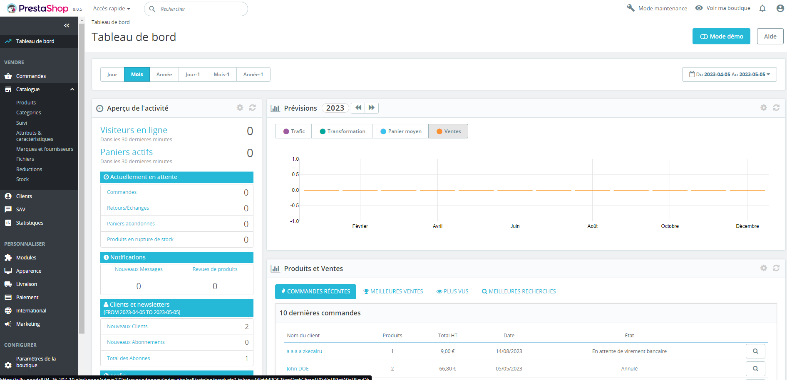
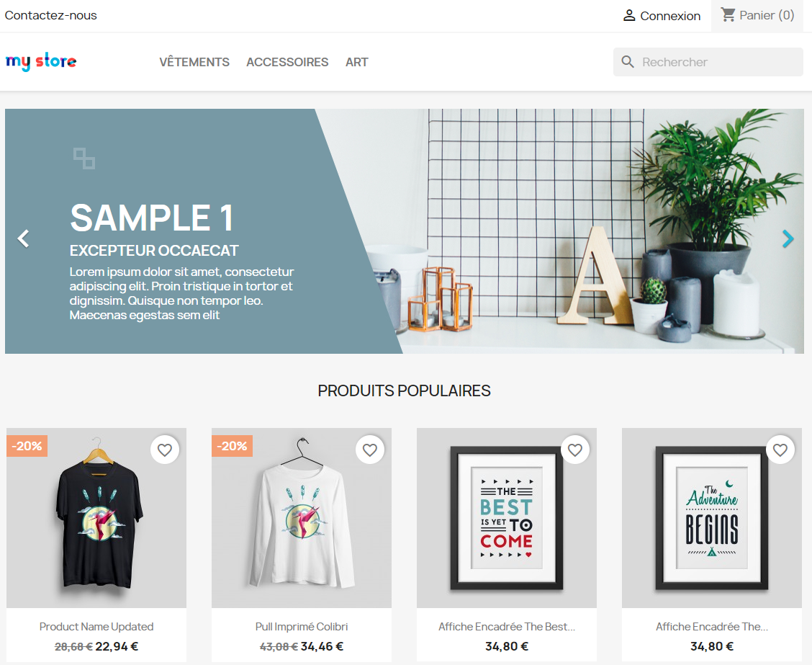

Contexte Premier Stage
Tuteur : Florian COUTURE (n'est plus dans la société)
Problématique du stage : Développement d'un WebService
Durée : 5 semaines
Mission Principale
Réaliser un Webservice Windev pour Prestashop afin de récupérer les transactions des
fiches clients, commandes et articles stockées dans l'ERP WaveSoft.
Outils utilisés :
WinDev : Atelier de génie logiciel édité par la société française PC SOFT et conçu pour développer des applications,
principalement orientées données pour Windows et également pour Linux, .NET et Java. Il propose son propre langage : le Wlangage
(semblable à Visual Studio avec le concept des fenêtres).
My SQL Server : Système de gestion de base de données en langage SQL incorporant un SGBDR développé et commercialisé par la société Microsoft.
WaveSoft : Outil de gestion des ressources spécialement conçu pour les TPE, PME-PMI de tous secteurs d’activité. Circuit complet des ventes et achats, catalogues articles,
stocks, suivi des règlements et relances, traçabilité.
Prestashop : Application Web open source permettant de créer une boutique en ligne dans le but de réaliser du commerce électronique. Permet également
aux commerçants de donner accès à des outils tiers à la base de données de leur boutique via API CRUD (webservice).
PhpMyAdmin : Application Web de gestion pour les systèmes de gestion de base de données MySQL et MariaDB.
Tâche 1 - Familiarisation avec l'atelier de génie logiciel Windev
Ma première tâche avait pour but de me familiariser avec un tout nouveau langage pour moi, le Wlangage.
Conçu pour développer des applications, principalement orientées données pour Windows et également pour Linux, .NET et Java (semblable
à Visual Studio avec le concept des fenêtres).
Pour cette tâche mon objectif était de réaliser quelques requêtes SQL en Wlangage.
Ci-dessous se trouve l'interface de Windev avec laquelle j'ai travaillé durant mon stage :

Tâche 2 - Ajout des articles dans Prestashop
La fenêtre permettant l’importation des articles dans Prestashop est celle-
ci :

Lorsque l'on appuit sur le bouton "Ajouter la sélection", les informations sont envoyées dans Prestashop grâce à ce morceau de code :

Tâche 3 - Boutique de e-commerce Prestashop
Ici se trouve le tableau de bord de la boutique Prestashop lorque l'on est administrateur :

Voici l'interface de la boutique Prestashop lorsqu'un utilisateur souhaite la visiter :
